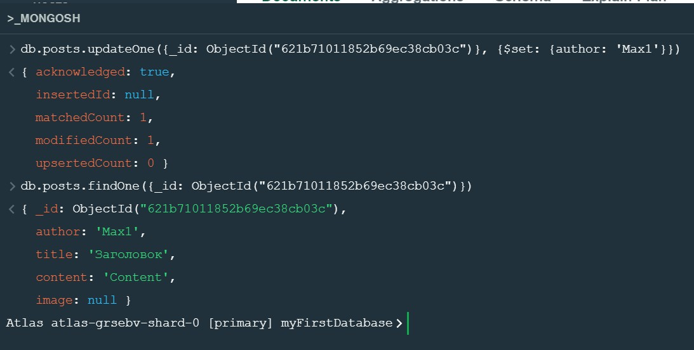
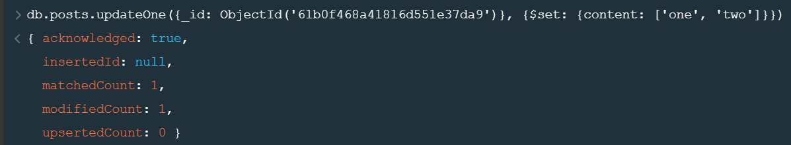
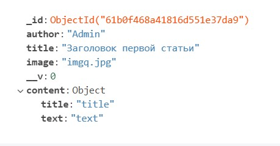
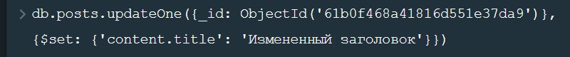
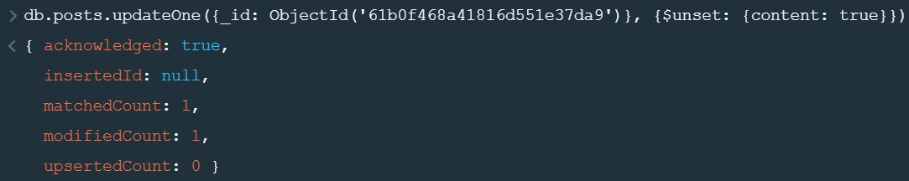
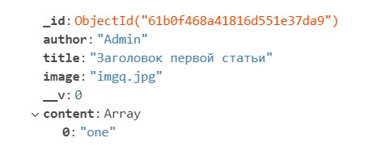
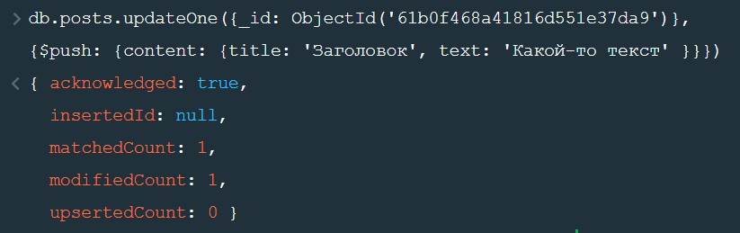
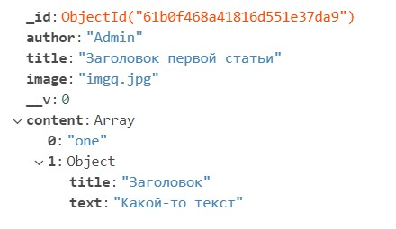

Для обновления одной записи используется метод updateOne. В качестве первого аргумента передается объект с фильтром. Вторым аргументом передается объект с ключем $set Оператор $set заменяет значение поля указанным значением. set является оператором агрегации
$set может даже изменить тип ключа, который он модифицирует. Например поменять значение ключа со строки в массив
Здесь в примере в ключе content была строка, станет массив.
Модификатор $set так же можно использовать для доступа ко вложенным свойствам. Например в свойстве content содержится объект с полями title и description
Вот как будет выглядеть запрос для изменения заголовка статьи
$unset - позволяет удалить ключ, для этого указываем какой ключ удаляем и передаем либо true либо 1
Для манипулирования массивами существует обширный класс операторов обновления.
$push - добавляет элемент в конец массива.
До
Запрос
Результат
